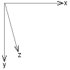
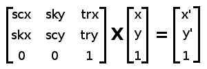
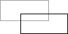

CSS - Propriété transform
Description de la propriété transform.
Définit les transformations géométriques à appliquer à l'élément. Cela peut-être des rotations, des translations, des inclinaisons, des changements de taille, ou un enchaînement de plusieurs de ces transformations
Les éléments de type inline (les balises a par exemple)
ne peuvent pas être transformés, de même que les éléments d'un tableau (lignes,
colonnes, cellules).
Cliquez sur les exemples ci-dessous pour voir leur code CSS.
Celui-ci a été incliné.
(axe X).
Axes.
Chacune des transformations s'effectue suivant un axe X, Y ou Z. Le plan de l'écran est défini par les axes X et Y (2D), tandis que l'axe Z introduit le 3D.

- L'axe x est l'axe horizontal, de gauche à droite.
- L'axe y est l'axe vertical, du haut vers le bas.
- L'axe z est l'axe qui va de l'écran vers l'observateur.
Une translation suivant cet axe ne sera pas visible, sauf si un effet de perspective a été défini. Par contre la rotation autour de l'axe z est la plus courante.
Les axes sont liés à l'élément lui-même, c'est à dire qu'ils se déplacent ou s'orientent en fonction de la position et de l'orientation de l'élément.
Transformations successives.
Plusieurs transformations successives peuvent être appliquées à un élément.
Il convient de les décrire les unes à la suite des autres dans une seule propriété transform.
L'ordre dans lequel sont décrites les transformations est très important.
Une rotation suivie d'une translation
Une translation suivie d'une rotation
Matrice de transformation.
Toutes les transformations appliquées à un élément peuvent se résumer par une matrice
de 9 valeurs dans le cas de transformations 2D, et de 16 valeurs pour une
transformation en 3D.
Les fonctions matrix() et matrix3d() permettent au concepteur
d'écrire directement ces matrices, sans passer par les transformations unitaires.
Les coordonnées d'un élément transformé (x' et y') sont obtenues en multipliant la matrice de transformation par les coordonnées d'origine (x et y). Cette opération est réalisée pour chacun des coins de l'élément.

Matrice de transformation en 2D
Syntaxes pour transform.
- transform:none;
Valeur par défaut. Aucune transformation n'est appliquée.
- transform: translate(50px, 30px); transform: translate3d(50px, 30px, 10px); transform: translateX(50px); transform: translateY(30px); transform: translateZ(10px);
Les fonctions de translation provoquent un décalage de l'élément, sans le déformer.
translate(),translateX()ettranslateY()agissent dans le plan de l'écran, tandis quetranslate3d()ettranslateZ()interviennent en 3D.
Pour davantage d'informations, reportez-vous à la description de ces fonctions.translate(): Applique une translation (un déplacement ) à un élément..translate3d(): Définit une translation en 3D suivant un ou plusieurs des axes X,Y et Z..translateX(): Définit une translation suivant l'axe X (horizontalement)..translateY(): .translateZ(): Définit une translation suivant l'axe Z (perpendiculaire à l'écran)..
- transform: rotate(15deg); transform: rotate3d(1,0,0,15deg); transform: rotateX(10deg); transform: rotateY(25deg); transform: rotateZ(15deg);
Ces fonctions provoquent une rotation de l'élément, suivant l'un des axes, ou, pour
rotate3d(), suivant un axe quelconque.rotate()etrotateZ()effectuent une rotation dans le plan de l'écran (en 2D). Les autres fonctions sont des fonctions de transformation en 3D.
Reportez-vous à la description de ces fonctions pour une présentation plus précise de leur syntaxe.rotate(): Définit une rotation de l'élément en 2D (dans le plan de l'écran)..rotate3d(): Définit une rotation 3D de l'élément autour d'un axe quelconque en 3D..rotateX(): Définit une rotation de l'élément autour de l'axe X (en 3D),.rotateY(): Définit une rotation 3D de l'élément autour de l'axe Y..rotateZ(): Définit une rotation de l'élément autour de l'axe Z..
- transform: skew(15deg,10deg); transform: skewX(15deg); transform: skewY(10deg);
Ces fonctions provoquent une inclinaison (une déformation) de l'élément. On parle aussi parfois d'un cisaillement de l'élément. Ces fonctions agissent en 2D, dans le plan de l'écran.
Reportez-vous à la description de ces fonctions :skew(): Définit une inclinaison de l'élément suivant les axes X et/ou Y..skewX(): Définit une inclinaison de l'élément suivant l'axe X..skewY(): Définit une inclinaison de l'élément suivant l'axe Y..
- transform: scale(2); transform: scale3d(2,1,3); transform: scaleX(2); transform: scaleY(2); transform: scaleZ(2);
Ces fonctions changent les dimensions de l'élément en l'agrandissant ou en le réduisant.
scale(),scaleX()etscaleY()agissent dans le plan de l'écran, c'est à dire en 2D, tandis quescale3d()etscaleZ()agissent en 3D. Reportez-vous à la description de ces fonctions : - transform: perspective(30px);
Définit l'effet de perspective pour l'élément transformé suivant une méthode 3d.
Reportez-vous à la description de la fonctionperspective(). - transform: matrix(1, 2, 0.5, 0.25, 1, 1); transform: matrix3d(1, 0.5, ...);
Ces fonctions, assez complexes à utiliser, permettent de définir n'importe quelle transformation ou succession de transformations.
Reportez-vous à la description des fonctionsmatrix()etmatrix3d(). - transform: perspective(50px) translateX(20px) rotateZ(45deg);
Plusieurs transformations peuvent être appliquées à l'élément : il suffit d'énumérer de les énumérer en les séparant par un espace.
Si la fonction
perspective()est utilisée dans une série de transformations, elle doit être citée en premier. - transform:
initial;La valeur initiale est
none. -
Reportez-vous à la description générale de ces valeurs.
Simulateur.
perspective :
translate :
rotate :
skew :
scale :
transformsur du texte
Compatibilité suivant les navigateurs.
Il convient de distinguer les transformations en 2D, c'est à dire dans le plan de l'écran (axes X et Y), et les transformations 3D, qui peuvent concerner l'axe Z, ainsiq ue les effets de perspective.
Transformations 2D.
Afficher le tableau de compatibilité (informations fournies par canIuse.com).
Transformations 3D.
Afficher le tableau de compatibilité (informations fournies par canIuse.com).
Voir aussi...
Transformations géométriques - Propriétés.
backface-visibility: Visibilité de la face arrière de l'élément (pendant sa rotation).perspective: Effet de perspective appliqué à un élément ayant subi une transformation 3D.perspective-origin: Position de l'observateur dans le cas d'une déformation 3D avec perspective.transform-origin: Point d'origine pour certaines transformations.transform-style: Rendu des éléments soumis à une transformation 3D.
Transformations géométriques - Fonctions.
matrix(): Applique une transformation composite à un élément (translations, rotations...)matrix3d(): Applique une série de transformations 3D à un élément.perspective(): Définit la hauteur de l'observateur dans le cas d'une transformation 3D.rotate(): Définit une rotation de l'élément en 2D (dans le plan de l'écran).rotate3d(): Définit une rotation 3D de l'élément autour d'un axe quelconque en 3D.rotateX(): Définit une rotation de l'élément autour de l'axe X (en 3D),rotateY(): Définit une rotation 3D de l'élément autour de l'axe Y.rotateZ(): Définit une rotation de l'élément autour de l'axe Z.scale(): Définit un agrandissement ou une réduction de l'élément.